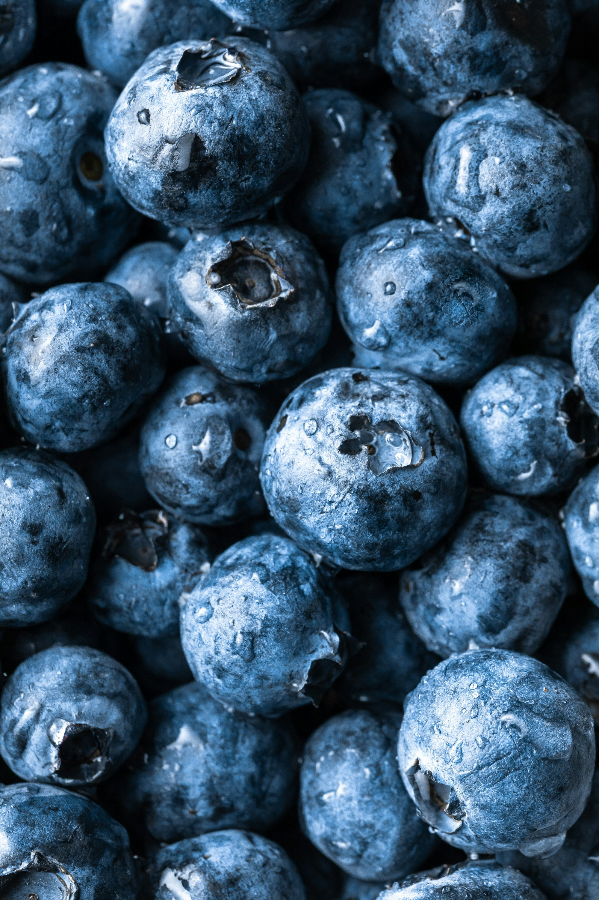
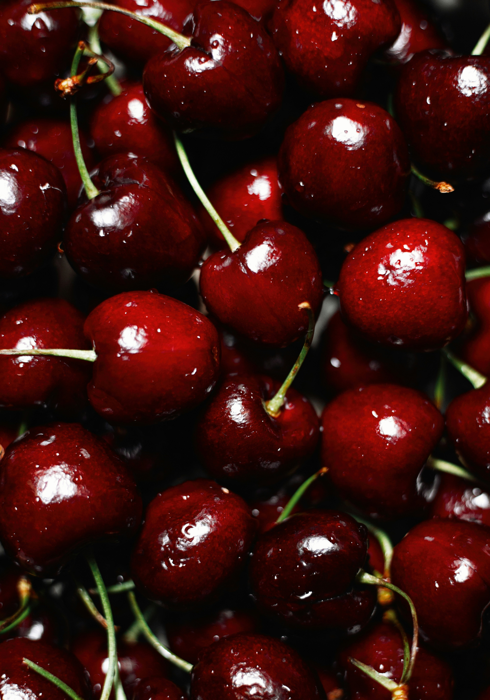

Berries are small, fleshy fruits that typically contain multiple seeds and grow on a variety of plants, including shrubs, vines, and low-lying bushes. They come in a wide range of colors—such as red, blue, purple, and black—and often have a juicy texture with a balance of sweetness and tartness. Common types include strawberries, blueberries, raspberries, and blackberries. Berries are widely appreciated for their vibrant flavors and are often used in cooking, baking, and fresh consumption. They are also known for being rich in natural compounds like vitamins, fiber, and antioxidants, making them a popular choice in many diets.

Citrus fruits are typically round or oval fruits with a thick, aromatic rind and juicy segments inside. They grow on trees in warm climates and are known for their bright, tangy flavors that range from sour to mildly sweet. Common examples include oranges, lemons, limes, and grapefruits. The flesh is divided into sections filled with juice, and the peel often contains fragrant oils.

Drupes are fruits that have a soft outer layer surrounding a single hard seed, often called a pit or stone. The outer skin can be smooth or slightly fuzzy, while the inner flesh is usually juicy or firm. Examples of drupes include peaches, cherries, plums, and mangoes. The defining feature is the hard center that protects the seed.

Pomes are fruits that have a core containing seeds, surrounded by a firm, edible outer layer. They typically develop from a flower with multiple parts that fuse together as the fruit grows. Apples and pears are the most common examples. Pomes usually have a crisp texture and a mild, sweet flavor, with the core in the center holding several small seeds.